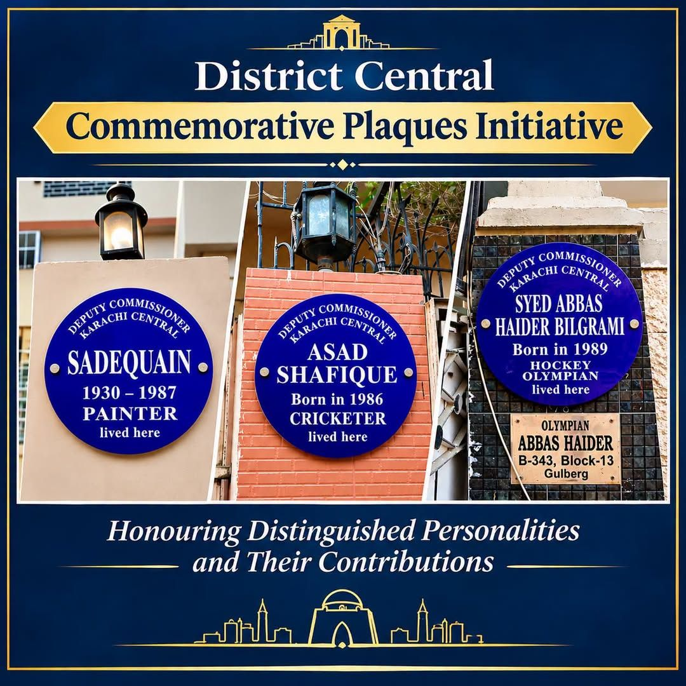

It is my pleasure to welcome you to the official District Central digital platform, designed to provide easy
access to public services, government information, and an efficient grievance redressal system. This
initiative reflects our commitment to transparent, accountable, and citizen-centric governance by bringing
essential services together in one convenient portal.
Through this platform, citizens can file complaints, access government schemes and programs, connect with
relevant departments, and explore public services. I encourage all residents of District Central to use this
platform and share their valuable feedback as we continue to improve our services.
Messages and direction from senior leadership guiding public administration and citizen service delivery.
Chief Minister Sindh
MURAD ALI SHAH
It is a privilege to lead the vibrant province of Sindh, a land celebrated for its rich cultural
heritage, historic
significance, and unparalleled resilience. My unwavering commitment is to ensure progress,
inclusivity, and prosperity
for all its people.
It is an honor to serve as the Chief Secretary of Sindh. We remain committed to strengthening good
governance, promoting sustainable development, and improving public service delivery through digital
innovation.
It is an honor to serve as the Commissioner of Karachi. My commitment remains steadfast to effective
governance, efficient public service delivery, and a safer, more organized city.
It is an honor to serve as the Deputy Commissioner of District Central, Karachi, a district
that stands
at the heart of the city's civic and economic life. My commitment remains steadfast: to ensure transparent
governance, efficient public service delivery, and swift redressal of citizen grievances for every
resident of District Central.
Under the guidance of the Commissioner Karachi and the Government of Sindh, we are working to
strengthen revenue administration, streamline the issuance of Domicile and Permanent Resident
Certificates, improve market price monitoring, and expand digital facilitation across all branches of this
office. These efforts are aimed at making government services more accessible, accountable, and
responsive to the needs of our citizens.
I invite the residents of District Central to make full use of this platform, to raise their concerns, and
to
share their valuable suggestions. Together, we can build a district administration that citizens trust and
rely on.
Messages and direction from senior leadership guiding public administration and citizen service delivery.
Additional Deputy Commissioner - I
Mr. Muhammad Asim Abbasi (Ex-PCS)
Oversees establishment, revenue, accounts, Domicile/PRC facilitation, the P.A. Branch of ADC-I and the Arms Branch across District Central. The ADC-I supports the Deputy Commissioner in running the district, supervises revenue records and staff matters, and acts on the Deputy Commissioner's behalf when assigned.
Oversees judicial coordination, general administration, Benevolent Fund matters, R&I, the Control Room and complaint handling across District Central. The ADC-II leads law-and-order coordination, NOCs and licences through the Judicial Branch, and makes sure every public complaint is followed up until it is resolved.
District Central is divided into five sub-divisions, each headed by an Assistant Commissioner who represents the Deputy Commissioner in the field. Assistant Commissioners supervise revenue work, carry out price control and anti-encroachment action, and hear public complaints in their sub-division. For most local administrative matters, the Assistant Commissioner's office is the first point of contact.
Each sub-division has a Mukhtiarkar who heads its revenue office. Mukhtiarkars maintain land records, process mutation and demarcation, prepare the verification reports needed for certificates such as Domicile and PRC, and represent the district administration in revenue cases before the courts.
Office Superintendents supervise the day-to-day working of the Deputy Commissioner's Office. They make sure that files, correspondence and public applications move through the branches promptly and are dealt with in line with the rules.
Mr. Kailash B. Maheshwari
Office Superintendent (Revenue) Posted: 1 December 2024
The main initiatives of the District Administration Central in 2026: honouring our legends, safer neighbourhoods, better schools and a greener district. Select an initiative to see what has been done month by month.

Commemorative Blue Plaques
Blue plaques at the homes of Sadequain, Asad Shafiq, Amjad Sabri, Umar Sharif and other legends of District Central.
Blue plaque for Amjad SabriYouth Hockey Field inaugurationPlantation drive at Kati PahariResidents Association general body meetingRang De wall paintingJashan-e-Azadi Hockey Tournament
Updates on the work of the District Administration Central, including coordination meetings, price control drives, public campaigns and improvements to citizen services.
Follow the District Administration Central on social media for public notices, coverage of official events, emergency alerts and updates from across the district.
Facebook
Latest public notices, event coverage, and community updates will appear here.
Instagram
Photo updates from district activities, inspections, and official campaigns.
YouTube
Video briefings, public awareness messages, and administrative announcements.
Complaint Box
Need Help?
Register a public complaint or track an existing complaint through the district facilitation channel.
Need assistance? Browse frequently asked questions or submit your complaint directly to the District Central
Office.
Frequently Asked Questions
Citizens may submit a domicile application with required identity documents, proof of residence,
photographs, and supporting records at the designated facilitation counter.
Complaints can be submitted through the online complaint form, the district complaint cell, or
official contact channels with complete details for review and follow-up.
The Deputy Commissioner Office, District Central is at Sector 15-A/1, Buffer Zone, Karachi. Public dealing hours are Monday to Friday, 9:00 AM to 5:00 PM.
Official forms, notifications, circulars, and public documents can be accessed from the downloads
section after selecting the required service category.
Citizens may review the Assistant Commissioners section to identify the relevant sub-division and
use the listed official contact channel for assistance.
The latest official price list will be available in the citizen services and downloads areas for
public reference and market awareness.